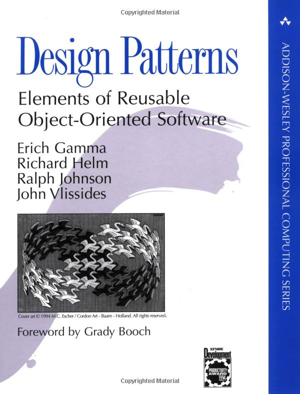

Core Java
Курс лекций. Лекция 12
@inponomarev
Анализ возможностей класса и взаимодействие с элементами класса
Получение членов класса
getXXX— все публичные элементы (поля, конструкторы, методы)getDeclaredXXX— все элементы, задекларированные в данном классе (без унаследованных)
Доступ к элементам
По умолчанию доступ определяется уровнями видимости (например, приватные элементы недоступны)
Можно открыть через
setAccessible(true)
Анализ аннотаций в runtime
Рефлексия и Generics
В runtime по объекту нельзя определить параметры типов (например, отличить
List<Employee>отList<Integer>).Анализируя параметризованнные классы (например,
List<T>) или методы (например,<T extends Comparable<? super T>> T min (T[] a)), с помощью рефлексии можно узнать всю информацию про его параметры типов.
ReflectionUtils
Reflection API довольно старое, использует массивы (неудобно в эпоху Streams & Collections).
Частые задачи (например, получить все — публичные и приватные, собственные и унаследованные элементы) не имеют готовых методов.
Можно пользоваться готовыми библиотеками, например,
org.reflections:reflections.
Класс с аннотированными полями
public class Person {
@Published
private final String firstName;
@Published
private final String lastName;
@Published
private final LocalDate birthDate;
...
}JsonSerializer: определение полей, помеченных @Published
public class JsonSerializer<T> {
private final Set<Field> publishedFields;
public JsonSerializer(Class<T> serializedClass) {
publishedFields = ReflectionUtils
.getAllFields(serializedClass,
f -> f.isAnnotationPresent(Published.class));
publishedFields.forEach(f -> f.setAccessible(true));
}JsonSerializer: сериализация объекта
public JSONObject serialize(T o) {
JSONObject result = new JSONObject();
for (Field f : publishedFields) {
Object fieldValue = null;
try { fieldValue = f.get(o); }
catch (IllegalAccessException e) {
e.printStackTrace(); }
if (fieldValue instanceof LocalDate) {
result.put(f.getName(),
((LocalDate) fieldValue).format(DateTimeFormatter.ISO_LOCAL_DATE));
} else {
result.put(f.getName(), fieldValue);
}
}
return result;
}Пример с Controller
public class Controller {
private final Service service;
@Command("foo")
void doSomething() {
service.foo();
}
@Command("bar")
void bar() {
service.bar();
}
@Command()
void help() {
service.help();
}
}CommandDispatcher
public class CommandDispatcher {
private final Object controller;
private final Map<String, Method> methodHashMap =
new HashMap<>();
private Method defaultMethod;CommandDispatcher: инициализация
public CommandDispatcher(Object controller) {
Objects.requireNonNull(controller);
this.controller = controller;
for (Method method : ReflectionUtils
.getAllMethods(controller.getClass())) {
Command command = method.getAnnotation(Command.class);
if (command != null) {
//Извлекаем параметр из аннотации
String commandId = command.value();
if (commandId.isEmpty()) {
defaultMethod = method;
} else {
methodHashMap.put(commandId, method);
}
}
}
}CommandDispatcher: выполнение команды
public void executeCommand(String command)
throws InvocationTargetException, IllegalAccessException {
Method method = methodHashMap
.getOrDefault(command, defaultMethod);
if (method != null){
method.invoke(controller);
}
}Наш учебный пример про доклады и спикеров
Реальная «слоистая» архитектура серверного приложения
Попытка №1, наивная. «Пусть объекты сами создают себе то, что им надо»
public class DataSource {
private ConnectionPool pool = new ConnectionPool(....);
//взятые откуда-то параметры подключения к БД ^^^^^^
...
}
public class SpeakerDao {
private DataSource ds = new DataSource();
...
}
public class TalkDao {
private DataSource ds = ???
//нам нужен один ConnectionPool на всех...
//не получается :-(
...
}Попытка №2. Выложим ссылку на единичный объект в статическое поле
public class ConnectionPool {
private final static ConnectionPool instance =
new ConnectionPool(...);
public static ConnectionPool getInstance() {
return instance;
}
//конструктор сделаем приватным, чтобы ни у кого не было соблазна
//создать объект явно
private ConnectionPool(...){
}
}Попытка №2. (продолжение)
public class DataSource {
private final static DataSource instance = ...
public DataSource getInstance() {
return instance;
}
private ConnectionPool pool = ConnectionPool.getInstance();
private DataSource() {
...
}
}Мы только что изобрели дизайн-паттерн «Одиночка»!
 |
|
Singleton Pattern
Прямое создание невозможно (инксапсулировано в приватном конструкторе).
Доступ к единственному экземпляру только через статический метод
getInstance()(илиfinal-переменнуюINSTANCE).Ведёт к проблемам архитектурного плана.
Но сначала отвлечёмся и попробуем правильно «сварить» синглетон.
Синглетоноварение: подход №1
public class Singleton {
//Создание Singleton "спрятано"
private static final Singleton instance = new Singleton();
public static Singleton getInstance() {
return instance;
}
//Лишаем возможности создать экземпляр объекта "извне"
private Singleton(){
}
}"Тяжёлый" объект создаётся всегда, даже если getInstance не будет вызван?
Подход №2
public class Singleton {
private static Singleton instance;
public static Singleton getInstance() {
if (instance == null) {
instance = new Singleton();
}
return instance;
}
private Singleton(){
}
}Что с многопоточным доступом к переменной instance?
Подход №3 ?!
public class Singleton {
private static volatile Singleton instance;
public static Singleton getInstance() {
if (instance == null) {
instance = new Singleton();
}
return instance;
}
private Singleton(){
}
}Теперь нет гарантии, что экземпляр создаётся только один раз!
Подход №4 ?! ?!
public class Singleton {
private static Singleton instance;
public static synchronized Singleton getInstance() {
if (instance == null) {
instance = new Singleton();
}
return instance;
}
private Singleton(){
}
}Все потоки будут выстраиваться в очередь, только чтобы получить доступ к переменной instance?
Подход №5 ?! ?! ?!
public class Singleton {
private static Singleton instance;
private static final Object lock = new Object();
public static Singleton getInstance() {
if (instance == null)
synchronized (lock) {
if (instance == null)
instance = new Singleton();
}
return instance;
}
private Singleton() {
}
}Программа сломана. Из-за того, что в первом if-е чтение поля instance не синхронизировано, возможно чтение частично инициализированного объекта (если конструктор Singleton заинлайнен).
Подход №6 . . .
public class Singleton {
private static volatile Singleton instance;
private static final Object lock = new Object();
public static Singleton getInstance() {
if (instance == null)
synchronized (lock) {
if (instance == null)
instance = new Singleton();
}
return instance;
}
private Singleton() {
}
}Ну, почти. Только у нас оверхед, потому что два раза читаем volatile-переменную.
Подход №7. Код из книги "Effective Java, 3rd edition"
Joshua Bloch: "On my machine, this method is about 1.4 times as fast as the obvious version without a local variable". [EJ, 3rd ed., pp. 334-335]
public class Singleton {
private static volatile Singleton instance;
private static final Object lock = new Object();
public static Singleton getInstance() {
Singleton result = instance;
if (result == null) {
synchronized (lock) {
if (instance == null)
instance = result = new Singleton();
}
}
return result;
}
}Подход №7. Код из книги "Effective Java, 3rd edition"
Вы уже видите баг в этом коде?
public class Singleton {
private static volatile Singleton instance;
private static final Object lock = new Object();
public static Singleton getInstance() {
Singleton result = instance;
if (result == null) {
synchronized (lock) {
if (instance == null)
instance = result = new Singleton();
}
}
return result;
}
}Если при входе в synchronized-блок instance != null, на выходе — null.

Единственно Верный Ленивый Потокобезопасный Синглетон
public class Singleton {
private static volatile Singleton instance;
private static final Object lock = new Object();
public static Singleton getInstance() {
Singleton result = instance;
if (result != null)
return result;
synchronized (lock) {
if (instance == null)
instance = new Singleton();
return instance;
}
}
private Singleton() {}
}Или нет?
Подход №8
// Correct lazy initialization in Java
public class Singleton {
private static class SingletonHolder {
public static final Singleton instance = new Singleton();
}
public static Singleton getInstance() {
return SingletonHolder.instance;
}
private Singleton() {
}
}Но беда синглетона не в этом
Как автоматически тестировать компоненты, которые жёстко связаны со своими зависимостями через статические поля/методы?
— Да никак!
Фабрика
// вынесли весь "wiring" из классов в фабричный метод
public static Controller makeController() {
DataSource dataSource =
new DataSource(ConnectionPool.getInstance());
ConferenceDao conferenceDao = new ConferenceDao(dataSource);
SpeakerDao speakerDao = new SpeakerDao(dataSource);
TalkDao talkDao = new SpeakerDao(dataSource);
return new Controller(conferenceDao, speakerDao, talkDao);
}Фабрика
Мы отвязались от «wiring» и можем создавать компоненты по отдельности, что позволяет тестировать.
Однако в фабричном методе много повторяющихся действий, фабрика должна «знать» про все компоненты.
Вообще этот процесс можно автоматизировать!
Dependency Injection
Dependency Injection
DI Frameworks
Google Guice
JBoss Seam Framework
PicoContainer
Spring
Построим свой DI-фреймворк «на коленке»
Пример на базе тренинга Евгения Борисова «Spring Ripper»
Позволяет понять логику и внутреннее устройство Spring Framework
Лектор-робот

public class RobotLecturer {
//«магическим» образом пусть тут появится то, что нужно!
@InjectByType
private Lecture lecture;
@InjectByType
private Speaker speaker;
@InjectByType
private SlideShow slideShow;
...
}Режим лектора
//Читать лекции просто
public void lecture() {
lecture.getSlides().forEach(
slide -> {
slideShow.show(slide.getText());
speaker.speak(slide.getComment());
}
);
}
//Main-метод
public static void main(String[] args)
throws ReflectiveOperationException {
RobotLecturer lecturer =
new ObjectFactory().createObject(RobotLecturer.class);
lecturer.lecture();
}Конфигуратор объекта
@RequiredArgsConstructor
public class InjectByTypeAnnotationObjectConfigurator
implements ObjectConfigurator {
//передадим сюда через конструктор ObjectFactory
private final ObjectFactory factory;
@Override
public void configure(Object t) throws ... {
for (Field field : t.getClass().getDeclaredFields()) {
if (field.isAnnotationPresent(InjectByType.class)) {
field.setAccessible(true);
//Мы же умеем по типу создавать объект?
field.set(t, factory.createObject(field.getType()));
}
}
}
}Как создаётся и конфигурируется объект
public class ObjectFactory {
//Правда, тут напрашивается DI?
private final Reflections scanner =
new Reflections("edu.phystech");
private final List<ObjectConfigurator> configurators =
new ArrayList<>();
public <T> T createObject(Class<? extends T> type) throws ... {
//Находим реализацию запрошенного типа
type = resolveImpl(type);
//Создаём объект (с помощью конструктора по умолчанию, TODO)
T t = type.newInstance();
//Конфигурируем
configure(t);
....
}Метод configure очень прост
private <T> void configure(T t) throws ... {
for (ObjectConfigurator configurator : configurators) {
configurator.configure(t);
}
}Как находится подходящая имплементация
private <T> Class<? extends T> resolveImpl(Class<? extends T> type){
if (type.isInterface()) {
Set<Class<? extends T>> classes =
scanner.getSubTypesOf((Class<T>) type);
if (classes.size() != 1) {
throw new RuntimeException(
"0 or more than one implementation found for type "
+ type + " please update your config");
}
type = classes.iterator().next();
}
return type;
}